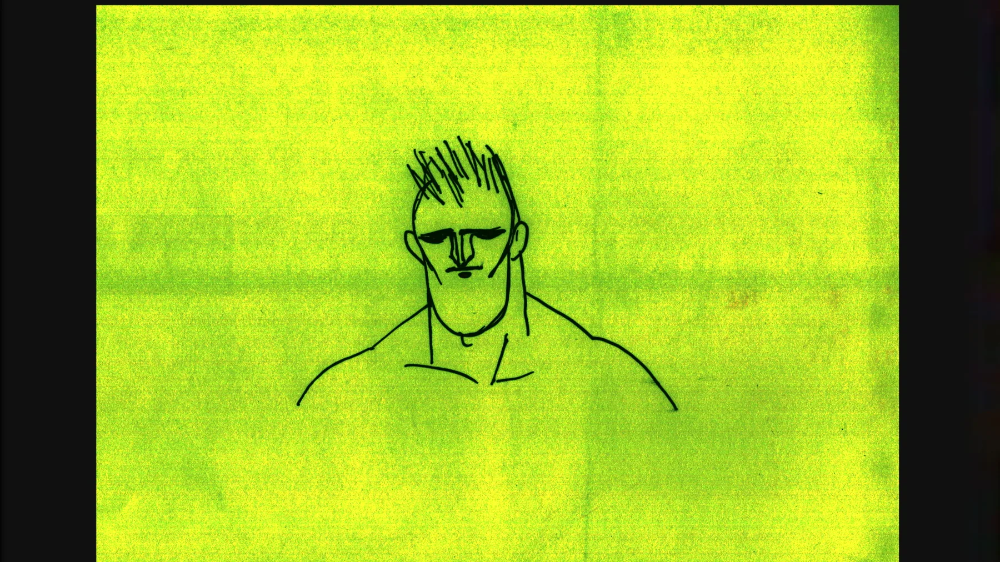
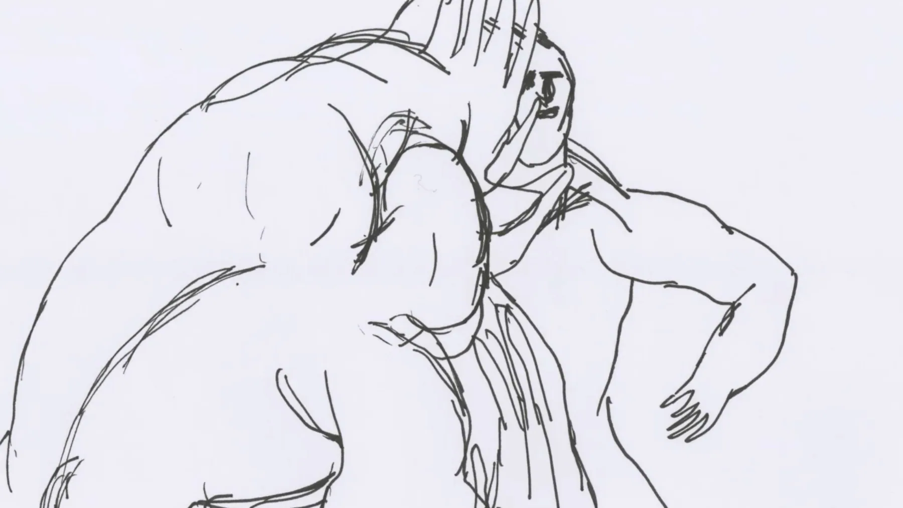
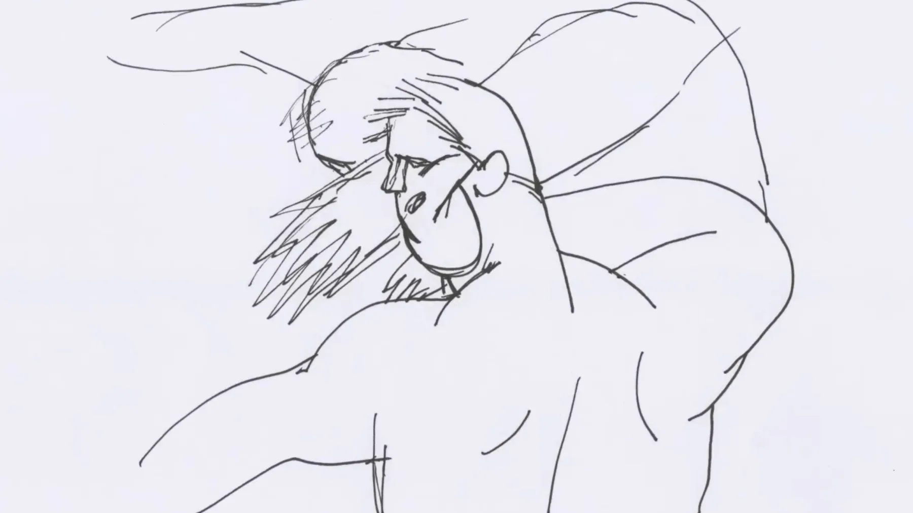
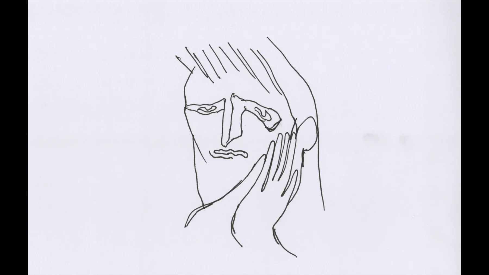
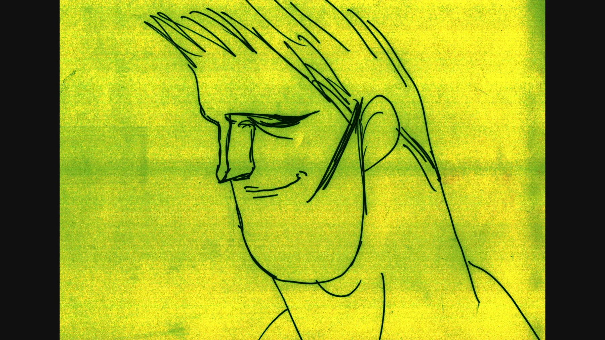
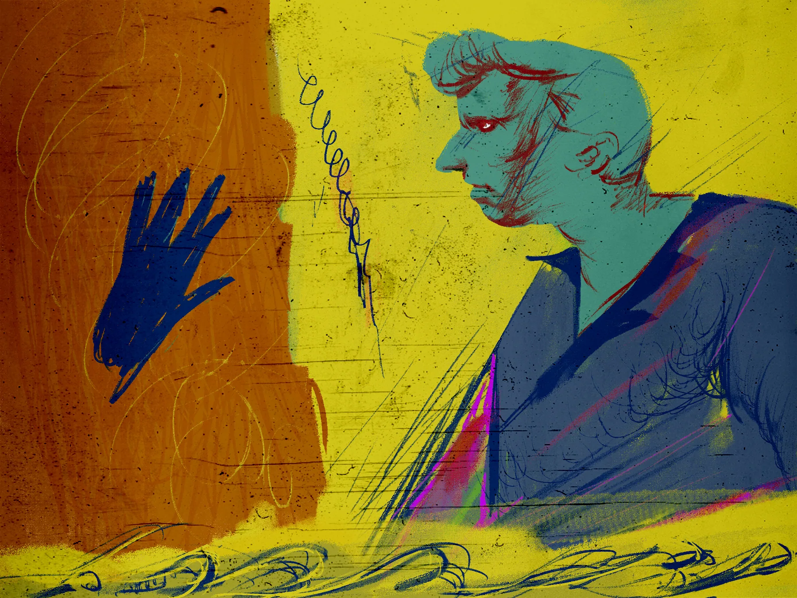

Skip to content
WORK
WILDER MOUNTAIN DOJO
WRITING
ABOUT
中文
Contact
中文
Contact
yyy
Maybe You Should've Swallowed






You may also like
2013
2013
A Man in Love
2014
Feinaki Beijing Animation Week
2019 –
↑ Back to Top
×